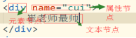
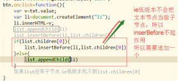

元素节点的树状图
document>documentElement>body>tagName
offsetLeft/offsetTop 结合运动
滚动轮播
1.DOM 全称：document object model
(1) 节点树状图
document>documentElement>body>tagname
2.我们常用的节点类型
元素节点(标签)
文本节点（文本节点）
属性节点(标签里的属性)

3.document有个属性叫nodeType 返回的是数字
1代表元素节点 2代表属性节点 3代表文本节点
4.节点的获取
元素节点获取有很多方法
document.getElementById()
document.getElementsByClassName()
document.getElementsByTagName()
document.querySelector()
document.querySelectorAll()
属性节点的获取
元素.attributes 获取元素身上所有属性构成的集合（数组）
得到里面的值 元素.attributes[1].value
元素.getAttribute(“属性名”) 获取属性值的方法
元素.setAttribute(“属性名”,”属性值”) 给元素设置属性和属性值
元素.removeAttribute(“属性”) 删除属性
文本节点
没有获取的方法，没有意义
5.获取元素的子节点
元素.childNodes 这个属性有兼容性 标准浏览器会获取到文本节点
而低版本浏览器不会。所以建议使用children这个属性。
获取单个子节点
获取第一个孩子
标准下 元素.firstElementChild
非标准下 元素.firstChild
兼容下写法
var list=document.getElementById("list")
var fist=list.firstElementChild||list.firstChild
console.log(fist)
获取最后一个子节点
元素.lastElementChild 元素.lastchild
获取上一个兄弟节点
元素.previousSibling
元素.previousElementSibling
获取下一个兄弟节点
元素.nextSibling
元素.nextElementSibling
6.获取父节点
元素.parentNode 没有兼容性
元素.parentNode.parentNode
区分offsetParent和parentNode的区别
DOM2 动态创建节点
1.生成节点的方法 document.createElement(“div”)
2.插入节点的方法 父元素.appendChild(新节点)
在父节点中的子节点后面插入新的节点
3.在指定的位置插入新的节点
(1) 父元素.insertBefore(新节点,谁的前面) 将新节点插入指定的元素前面
4,删除元素节点 父元素.removeChild()
案例分析
仿留言板

兼容性
元素没有子节点，ie低版本会读取不到，而标准浏览器会。
因为标准浏览器会把文本节点当作子节点，而ie6-8不会。
超链接a的属性href分析
<a href=””> 点击会刷新页面，相当于向后台发送一次请求。
<a href=”#s”> 锚点跳转 跳转到某一个id叫s的位置上
<a href=”javascript:;”> 取消刷新页面的功能
拓展
字符串拼接和Dom创建都是渲染的方式
字符串拼接
优点 简单，层次感强，可以处理大量数据
缺点：字符串拼接会影响到原有子元素的事件
Dom创建
优点:是一个独立的个体，不会影响到原有的元素
缺点:处理数据量过大会比较麻烦,会造成DOM回流
Dom回流
页面渲染时，我们对html结构简单的增删查改时，浏览器会对所有的dom进行重新排列，这就是Dom回流，严重影响浏览器的性能。
补充
提升页面性能优化